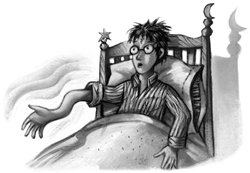

Since the disastrous episode of the pixies, Professor Lockhart had not brought live creatures to class. Instead, he read passages from his books to them, and sometimes reenacted some of the more dramatic bits. He usually picked Harry to help him with these reconstructions; so far, Harry had been forced to play a simple Transylvanian villager whom Lockhart had cured of a Babbling Curse, a yeti with a head cold, and a vampire who had been unable to eat anything except lettuce since Lockhart had dealt with him.
Harry was hauled to the front of the class during their very next Defense Against the Dark Arts lesson, this time acting a werewolf. If he hadn’t had a very good reason for keeping Lockhart in a good mood, he would have refused to do it.
“Nice loud howl, Harry — exactly — and then, if you’ll believe it, I pounced — like this — slammed him to the floor — thus — with one hand, I managed to hold him down — with my other, I put my wand to his throat — I then screwed up my remaining strength and performed the immensely complex Homorphus Charm — he let out a piteous moan — go on, Harry — higher than that — good — the fur vanished — the fangs shrank — and he turned back into a man. Simple, yet effective — and another village will remember me forever as the hero who delivered them from the monthly terror of werewolf attacks.”
The bell rang and Lockhart got to his feet.
“Homework — compose a poem about my defeat of the Wagga Wagga Werewolf! Signed copies of Magical Me to the author of the best one!”
The class began to leave. Harry returned to the back of the room, where Ron and Hermione were waiting.
“Ready?” Harry muttered.
“Wait till everyone’s gone,” said Hermione nervously. “All right . . .”
She approached Lockhart’s desk, a piece of paper clutched tightly in her hand, Harry and Ron right behind her.
“Er — Professor Lockhart?” Hermione stammered. “I wanted to — to get this book out of the library. Just for background reading.” She held out the piece of paper, her hand shaking slightly. “But the thing is, it’s in the Restricted Section of the library, so I need a teacher to sign for it — I’m sure it would help me understand what you say in Gadding with Ghouls about slow-acting venoms —”
“Ah, Gadding with Ghouls!” said Lockhart, taking the note from Hermione and smiling widely at her. “Possibly my very favorite book. You enjoyed it?”
“Oh, yes,” said Hermione eagerly. “So clever, the way you trapped that last one with the tea-strainer —”
“Well, I’m sure no one will mind me giving the best student of the year a little extra help,” said Lockhart warmly, and he pulled out an enormous peacock quill. “Yes, nice, isn’t it?” he said, misreading the revolted look on Ron’s face. “I usually save it for book signings.”
He scrawled an enormous loopy signature on the note and handed it back to Hermione.
“So, Harry,” said Lockhart, while Hermione folded the note with fumbling fingers and slipped it into her bag. “Tomorrow’s the first Quidditch match of the season, I believe? Gryffindor against Slytherin, is it not? I hear you’re a useful player. I was a Seeker, too. I was asked to try for the National Squad, but preferred to dedicate my life to the eradication of the Dark Forces. Still, if ever you feel the need for a little private training, don’t hesitate to ask. Always happy to pass on my expertise to less able players. . . .”
Harry made an indistinct noise in his throat and then hurried off after Ron and Hermione.
“I don’t believe it,” he said as the three of them examined the signature on the note. “He didn’t even look at the book we wanted.”
“That’s because he’s a brainless git,” said Ron. “But who cares, we’ve got what we needed —”
“He is not a brainless git,” said Hermione shrilly as they half ran toward the library.
“Just because he said you were the best student of the year —”
They dropped their voices as they entered the muffled stillness of the library. Madam Pince, the librarian, was a thin, irritable woman who looked like an underfed vulture.
“Moste Potente Potions?” she repeated suspiciously, trying to take the note from Hermione; but Hermione wouldn’t let go.
“I was wondering if I could keep it,” she said breathlessly.
“Oh, come on,” said Ron, wrenching it from her grasp and thrusting it at Madam Pince. “We’ll get you another autograph. Lockhart’ll sign anything if it stands still long enough.”
Madam Pince held the note up to the light, as though determined to detect a forgery, but it passed the test. She stalked away between the lofty shelves and returned several minutes later carrying a large and moldy-looking book. Hermione put it carefully into her bag and they left, trying not to walk too quickly or look too guilty.
Five minutes later, they were barricaded in Moaning Myrtle’s out-of-order bathroom once again. Hermione had overridden Ron’s objections by pointing out that it was the last place anyone in their right minds would go, so they were guaranteed some privacy. Moaning Myrtle was crying noisily in her stall, but they were ignoring her, and she them.
Hermione opened Moste Potente Potions carefully, and the three of them bent over the damp-spotted pages. It was clear from a glance why it belonged in the Restricted Section. Some of the potions had effects almost too gruesome to think about, and there were some very unpleasant illustrations, which included a man who seemed to have been turned inside out and a witch sprouting several extra pairs of arms out of her head.
“Here it is,” said Hermione excitedly as she found the page headed The Polyjuice Potion. It was decorated with drawings of people halfway through transforming into other people. Harry sincerely hoped the artist had imagined the looks of intense pain on their faces.
“This is the most complicated potion I’ve ever seen,” said Hermione as they scanned the recipe. “Lacewing flies, leeches, fluxweed, and knotgrass,” she murmured, running her finger down the list of ingredients. “Well, they’re easy enough, they’re in the student store-cupboard, we can help ourselves. . . . Oooh, look, powdered horn of a bicorn — don’t know where we’re going to get that — shredded skin of a boomslang — that’ll be tricky, too — and of course a bit of whoever we want to change into.”
“Excuse me?” said Ron sharply. “What d’you mean, a bit of whoever we’re changing into? I’m drinking nothing with Crabbe’s toenails in it —”
Hermione continued as though she hadn’t heard him.
“We don’t have to worry about that yet, though, because we add those bits last. . . .”
Ron turned, speechless, to Harry, who had another worry.
“D’you realize how much we’re going to have to steal, Hermione? Shredded skin of a boomslang, that’s definitely not in the students’ cupboard. What’re we going to do, break into Snape’s private stores? I don’t know if this is a good idea. . . .”
Hermione shut the book with a snap.
“Well, if you two are going to chicken out, fine,” she said. There were bright pink patches on her cheeks and her eyes were brighter than usual. “I don’t want to break rules, you know. I think threatening Muggle-borns is far worse than brewing up a difficult potion. But if you don’t want to find out if it’s Malfoy, I’ll go straight to Madam Pince now and hand the book back in —”
“I never thought I’d see the day when you’d be persuading us to break rules,” said Ron. “All right, we’ll do it. But not toenails, okay?”
“How long will it take to make, anyway?” said Harry as Hermione, looking happier, opened the book again.
“Well, since the fluxweed has got to be picked at the full moon and the lacewings have got to be stewed for twenty-one days . . . I’d say it’d be ready in about a month, if we can get all the ingredients.”
“A month?” said Ron. “Malfoy could have attacked half the Muggle-borns in the school by then!” But Hermione’s eyes narrowed dangerously again, and he added swiftly, “But it’s the best plan we’ve got, so full steam ahead, I say.”
However, while Hermione was checking that the coast was clear for them to leave the bathroom, Ron muttered to Harry, “It’ll be a lot less hassle if you can just knock Malfoy off his broom tomorrow.”
Harry woke early on Saturday morning and lay for a while thinking about the coming Quidditch match. He was nervous, mainly at the thought of what Wood would say if Gryffindor lost, but also at the idea of facing a team mounted on the fastest racing brooms gold could buy. He had never wanted to beat Slytherin so badly. After half an hour of lying there with his insides churning, he got up, dressed, and went down to breakfast early, where he found the rest of the Gryffindor team huddled at the long, empty table, all looking uptight and not speaking much.
As eleven o’clock approached, the whole school started to make its way down to the Quidditch stadium. It was a muggy sort of day with a hint of thunder in the air. Ron and Hermione came hurrying over to wish Harry good luck as he entered the locker rooms. The team pulled on their scarlet Gryffindor robes, then sat down to listen to Wood’s usual pre-match pep talk.
“Slytherin has better brooms than us,” he began. “No point denying it. But we’ve got better people on our brooms. We’ve trained harder than they have, we’ve been flying in all weathers —” (“Too true,” muttered George Weasley. “I haven’t been properly dry since August”) “— and we’re going to make them rue the day they let that little bit of slime, Malfoy, buy his way onto their team.”
Chest heaving with emotion, Wood turned to Harry.
“It’ll be down to you, Harry, to show them that a Seeker has to have something more than a rich father. Get to that Snitch before Malfoy or die trying, Harry, because we’ve got to win today, we’ve got to.”
“So no pressure, Harry,” said Fred, winking at him.
As they walked out onto the pitch, a roar of noise greeted them; mainly cheers, because Ravenclaw and Hufflepuff were anxious to see Slytherin beaten, but the Slytherins in the crowd made their boos and hisses heard, too. Madam Hooch, the Quidditch teacher, asked Flint and Wood to shake hands, which they did, giving each other threatening stares and gripping rather harder than was necessary.
“On my whistle,” said Madam Hooch. “Three . . . two . . . one . . .”
With a roar from the crowd to speed them upward, the fourteen players rose toward the leaden sky. Harry flew higher than any of them, squinting around for the Snitch.
“All right there, Scarhead?” yelled Malfoy, shooting underneath him as though to show off the speed of his broom.
Harry had no time to reply. At that very moment, a heavy black Bludger came pelting toward him; he avoided it so narrowly that he felt it ruffle his hair as it passed.
“Close one, Harry!” said George, streaking past him with his club in his hand, ready to knock the Bludger back toward a Slytherin. Harry saw George give the Bludger a powerful whack in the direction of Adrian Pucey, but the Bludger changed direction in midair and shot straight for Harry again.
Harry dropped quickly to avoid it, and George managed to hit it hard toward Malfoy. Once again, the Bludger swerved like a boomerang and shot at Harry’s head.
Harry put on a burst of speed and zoomed toward the other end of the pitch. He could hear the Bludger whistling along behind him. What was going on? Bludgers never concentrated on one player like this; it was their job to try and unseat as many people as possible. . . .
Fred Weasley was waiting for the Bludger at the other end. Harry ducked as Fred swung at the Bludger with all his might; the Bludger was knocked off course.
“Gotcha!” Fred yelled happily, but he was wrong; as though it was magnetically attracted to Harry, the Bludger pelted after him once more and Harry was forced to fly off at full speed.
It had started to rain; Harry felt heavy drops fall onto his face, splattering onto his glasses. He didn’t have a clue what was going on in the rest of the game until he heard Lee Jordan, who was commentating, say, “Slytherin lead, sixty points to zero —”
The Slytherins’ superior brooms were clearly doing their jobs, and meanwhile the mad Bludger was doing all it could to knock Harry out of the air. Fred and George were now flying so close to him on either side that Harry could see nothing at all except their flailing arms and had no chance to look for the Snitch, let alone catch it.
“Someone’s — tampered — with — this — Bludger —” Fred grunted, swinging his bat with all his might at it as it launched a new attack on Harry.
“We need time out,” said George, trying to signal to Wood and stop the Bludger breaking Harry’s nose at the same time.
Wood had obviously got the message. Madam Hooch’s whistle rang out and Harry, Fred, and George dived for the ground, still trying to avoid the mad Bludger.
“What’s going on?” said Wood as the Gryffindor team huddled together, while Slytherins in the crowd jeered. “We’re being flattened. Fred, George, where were you when that Bludger stopped Angelina scoring?”
“We were twenty feet above her, stopping the other Bludger from murdering Harry, Oliver,” said George angrily. “Someone’s fixed it — it won’t leave Harry alone. It hasn’t gone for anyone else all game. The Slytherins must have done something to it.”
“But the Bludgers have been locked in Madam Hooch’s office since our last practice, and there was nothing wrong with them then. . . .” said Wood, anxiously.
Madam Hooch was walking toward them. Over her shoulder, Harry could see the Slytherin team jeering and pointing in his direction.
“Listen,” said Harry as she came nearer and nearer, “with you two flying around me all the time the only way I’m going to catch the Snitch is if it flies up my sleeve. Go back to the rest of the team and let me deal with the rogue one.”
“Don’t be thick,” said Fred. “It’ll take your head off.”
Wood was looking from Harry to the Weasleys.
“Oliver, this is insane,” said Alicia Spinnet angrily. “You can’t let Harry deal with that thing on his own. Let’s ask for an inquiry —”
“If we stop now, we’ll have to forfeit the match!” said Harry. “And we’re not losing to Slytherin just because of a crazy Bludger! Come on, Oliver, tell them to leave me alone!”
“This is all your fault,” George said angrily to Wood. “‘Get the Snitch or die trying,’ what a stupid thing to tell him —”
Madam Hooch had joined them.
“Ready to resume play?” she asked Wood.
Wood looked at the determined look on Harry’s face.
“All right,” he said. “Fred, George, you heard Harry — leave him alone and let him deal with the Bludger on his own.”
The rain was falling more heavily now. On Madam Hooch’s whistle, Harry kicked hard into the air and heard the telltale whoosh of the Bludger behind him. Higher and higher Harry climbed; he looped and swooped, spiraled, zigzagged, and rolled. Slightly dizzy, he nevertheless kept his eyes wide open, rain was speckling his glasses and ran up his nostrils as he hung upside down, avoiding another fierce dive from the Bludger. He could hear laughter from the crowd; he knew he must look very stupid, but the rogue Bludger was heavy and couldn’t change direction as quickly as Harry could; he began a kind of roller-coaster ride around the edges of the stadium, squinting through the silver sheets of rain to the Gryffindor goalposts, where Adrian Pucey was trying to get past Wood —
A whistling in Harry’s ear told him the Bludger had just missed him again; he turned right over and sped in the opposite direction.
“Training for the ballet, Potter?” yelled Malfoy as Harry was forced to do a stupid kind of twirl in midair to dodge the Bludger, and he fled, the Bludger trailing a few feet behind him; and then, glaring back at Malfoy in hatred, he saw it — the Golden Snitch. It was hovering inches above Malfoy’s left ear — and Malfoy, busy laughing at Harry, hadn’t seen it.
For an agonizing moment, Harry hung in midair, not daring to speed toward Malfoy in case he looked up and saw the Snitch.
WHAM.
He had stayed still a second too long. The Bludger had hit him at last, smashed into his elbow, and Harry felt his arm break. Dimly, dazed by the searing pain in his arm, he slid sideways on his rain-drenched broom, one knee still crooked over it, his right arm dangling useless at his side — the Bludger came pelting back for a second attack, this time aiming at his face — Harry swerved out of the way, one idea firmly lodged in his numb brain: get to Malfoy.
Through a haze of rain and pain he dived for the shimmering, sneering face below him and saw its eyes widen with fear: Malfoy thought Harry was attacking him.
“What the —” he gasped, careening out of Harry’s way.
Harry took his remaining hand off his broom and made a wild snatch; he felt his fingers close on the cold Snitch but was now only gripping the broom with his legs, and there was a yell from the crowd below as he headed straight for the ground, trying hard not to pass out.
With a splattering thud he hit the mud and rolled off his broom. His arm was hanging at a very strange angle; riddled with pain, he heard, as though from a distance, a good deal of whistling and shouting. He focused on the Snitch clutched in his good hand.
“Aha,” he said vaguely. “We’ve won.”
And he fainted.
He came around, rain falling on his face, still lying on the field, with someone leaning over him. He saw a glitter of teeth.
“Oh, no, not you,” he moaned.
“Doesn’t know what he’s saying,” said Lockhart loudly to the anxious crowd of Gryffindors pressing around them. “Not to worry, Harry. I’m about to fix your arm.”
“No!” said Harry. “I’ll keep it like this, thanks. . . .”
He tried to sit up, but the pain was terrible. He heard a familiar clicking noise nearby.
“I don’t want a photo of this, Colin,” he said loudly.
“Lie back, Harry,” said Lockhart soothingly. “It’s a simple charm I’ve used countless times —”
“Why can’t I just go to the hospital wing?” said Harry through clenched teeth.
“He should really, Professor,” said a muddy Wood, who couldn’t help grinning even though his Seeker was injured. “Great capture, Harry, really spectacular, your best yet, I’d say —”
Through the thicket of legs around him, Harry spotted Fred and George Weasley, wrestling the rogue Bludger into a box. It was still putting up a terrific fight.
“Stand back,” said Lockhart, who was rolling up his jade-green sleeves.
“No — don’t —” said Harry weakly, but Lockhart was twirling his wand and a second later had directed it straight at Harry’s arm.
A strange and unpleasant sensation started at Harry’s shoulder and spread all the way down to his fingertips. It felt as though his arm was being deflated. He didn’t dare look at what was happening. He had shut his eyes, his face turned away from his arm, but his worst fears were realized as the people above him gasped and Colin Creevey began clicking away madly. His arm didn’t hurt anymore — nor did it feel remotely like an arm.
“Ah,” said Lockhart. “Yes. Well, that can sometimes happen. But the point is, the bones are no longer broken. That’s the thing to bear in mind. So, Harry, just toddle up to the hospital wing — ah, Mr. Weasley, Miss Granger, would you escort him? — and Madam Pomfrey will be able to — er — tidy you up a bit.”
As Harry got to his feet, he felt strangely lopsided. Taking a deep breath he looked down at his right side. What he saw nearly made him pass out again.
Poking out of the end of his robes was what looked like a thick, flesh-colored rubber glove. He tried to move his fingers. Nothing happened.
Lockhart hadn’t mended Harry’s bones. He had removed them.
Madam Pomfrey wasn’t at all pleased.
“You should have come straight to me!” she raged, holding up the sad, limp remainder of what, half an hour before, had been a working arm. “I can mend bones in a second — but growing them back —”
“You will be able to, won’t you?” said Harry desperately.
“I’ll be able to, certainly, but it will be painful,” said Madam Pomfrey grimly, throwing Harry a pair of pajamas. “You’ll have to stay the night. . . .”
Hermione waited outside the curtain drawn around Harry’s bed while Ron helped him into his pajamas. It took a while to stuff the rubbery, boneless arm into a sleeve.
“How can you stick up for Lockhart now, Hermione, eh?” Ron called through the curtain as he pulled Harry’s limp fingers through the cuff. “If Harry had wanted deboning he would have asked.”
“Anyone can make a mistake,” said Hermione. “And it doesn’t hurt anymore, does it, Harry?”
“No,” said Harry, getting into bed. “But it doesn’t do anything else either.”
As he swung himself onto the bed, his arm flapped pointlessly.
Hermione and Madam Pomfrey came around the curtain. Madam Pomfrey was holding a large bottle of something labeled Skele-Gro.
“You’re in for a rough night,” she said, pouring out a steaming beakerful and handing it to him. “Regrowing bones is a nasty business.”
So was taking the Skele-Gro. It burned Harry’s mouth and throat as it went down, making him cough and splutter. Still tut-tutting about dangerous sports and inept teachers, Madam Pomfrey retreated, leaving Ron and Hermione to help Harry gulp down some water.
“We won, though,” said Ron, a grin breaking across his face. “That was some catch you made. Malfoy’s face . . . he looked ready to kill. . . .”
“I want to know how he fixed that Bludger,” said Hermione darkly.
“We can add that to the list of questions we’ll ask him when we’ve taken the Polyjuice Potion,” said Harry, sinking back onto his pillows. “I hope it tastes better than this stuff. . . .”
“If it’s got bits of Slytherins in it? You’ve got to be joking,” said Ron.
The door of the hospital wing burst open at that moment. Filthy and soaking wet, the rest of the Gryffindor team had arrived to see Harry.
“Unbelievable flying, Harry,” said George. “I’ve just seen Marcus Flint yelling at Malfoy. Something about having the Snitch on top of his head and not noticing. Malfoy didn’t seem too happy.”
They had brought cakes, sweets, and bottles of pumpkin juice; they gathered around Harry’s bed and were just getting started on what promised to be a good party when Madam Pomfrey came storming over, shouting, “This boy needs rest, he’s got thirty-three bones to regrow! Out! OUT!”
And Harry was left alone, with nothing to distract him from the stabbing pains in his limp arm.
Hours and hours later, Harry woke quite suddenly in the pitch blackness and gave a small yelp of pain: His arm now felt full of large splinters. For a second, he thought that was what had woken him. Then, with a thrill of horror, he realized that someone was sponging his forehead in the dark.
“Get off!” he said loudly, and then, “Dobby!”
The house-elf’s goggling tennis ball eyes were peering at Harry through the darkness. A single tear was running down his long, pointed nose.
“Harry Potter came back to school,” he whispered miserably. “Dobby warned and warned Harry Potter. Ah sir, why didn’t you heed Dobby? Why didn’t Harry Potter go back home when he missed the train?”
Harry heaved himself up on his pillows and pushed Dobby’s sponge away.
“What’re you doing here?” he said. “And how did you know I missed the train?”
Dobby’s lip trembled and Harry was seized by a sudden suspicion.
“It was you!” he said slowly. “You stopped the barrier from letting us through!”
“Indeed yes, sir,” said Dobby, nodding his head vigorously, ears flapping. “Dobby hid and watched for Harry Potter and sealed the gateway and Dobby had to iron his hands afterward” — he showed Harry ten long, bandaged fingers — “but Dobby didn’t care, sir, for he thought Harry Potter was safe, and never did Dobby dream that Harry Potter would get to school another way!”
He was rocking backward and forward, shaking his ugly head.
“Dobby was so shocked when he heard Harry Potter was back at Hogwarts, he let his master’s dinner burn! Such a flogging Dobby never had, sir. . . .”
Harry slumped back onto his pillows.
“You nearly got Ron and me expelled,” he said fiercely. “You’d better get lost before my bones come back, Dobby, or I might strangle you.”
Dobby smiled weakly.
“Dobby is used to death threats, sir. Dobby gets them five times a day at home.”
He blew his nose on a corner of the filthy pillowcase he wore, looking so pathetic that Harry felt his anger ebb away in spite of himself.
“Why d’you wear that thing, Dobby?” he asked curiously.
“This, sir?” said Dobby, plucking at the pillowcase. “’Tis a mark of the house-elf’s enslavement, sir. Dobby can only be freed if his masters present him with clothes, sir. The family is careful not to pass Dobby even a sock, sir, for then he would be free to leave their house forever.”
Dobby mopped his bulging eyes and said suddenly, “Harry Potter must go home! Dobby thought his Bludger would be enough to make —”
“Your Bludger?” said Harry, anger rising once more. “What d’you mean, your Bludger? You made that Bludger try and kill me?”
“Not kill you, sir, never kill you!” said Dobby, shocked. “Dobby wants to save Harry Potter’s life! Better sent home, grievously injured, than remain here, sir! Dobby only wanted Harry Potter hurt enough to be sent home!”
“Oh, is that all?” said Harry angrily. “I don’t suppose you’re going to tell me why you wanted me sent home in pieces?”
“Ah, if Harry Potter only knew!” Dobby groaned, more tears dripping onto his ragged pillowcase. “If he knew what he means to us, to the lowly, the enslaved, we dregs of the magical world! Dobby remembers how it was when He-Who-Must-Not-Be-Named was at the height of his powers, sir! We house-elves were treated like vermin, sir! Of course, Dobby is still treated like that, sir,” he admitted, drying his face on the pillowcase. “But mostly, sir, life has improved for my kind since you triumphed over He-Who-Must-Not-Be-Named. Harry Potter survived, and the Dark Lord’s power was broken, and it was a new dawn, sir, and Harry Potter shone like a beacon of hope for those of us who thought the dark days would never end, sir. . . . And now, at Hogwarts, terrible things are to happen, are perhaps happening already, and Dobby cannot let Harry Potter stay here now that history is to repeat itself, now that the Chamber of Secrets is open once more —”
Dobby froze, horrorstruck, then grabbed Harry’s water jug from his bedside table and cracked it over his own head, toppling out of sight. A second later, he crawled back onto the bed, cross-eyed, muttering, “Bad Dobby, very bad Dobby . . .”
“So there is a Chamber of Secrets?” Harry whispered. “And — did you say it’s been opened before? Tell me, Dobby!”
He seized the elf’s bony wrist as Dobby’s hand inched toward the water jug. “But I’m not Muggle-born — how can I be in danger from the Chamber?”
“Ah, sir, ask no more, ask no more of poor Dobby,” stammered the elf, his eyes huge in the dark. “Dark deeds are planned in this place, but Harry Potter must not be here when they happen — go home, Harry Potter, go home. Harry Potter must not meddle in this, sir, ’tis too dangerous —”
“Who is it, Dobby?” Harry said, keeping a firm hold on Dobby’s wrist to stop him from hitting himself with the water jug again. “Who’s opened it? Who opened it last time?”
“Dobby can’t, sir, Dobby can’t, Dobby mustn’t tell!” squealed the elf. “Go home, Harry Potter, go home!”
“I’m not going anywhere!” said Harry fiercely. “One of my best friends is Muggle-born; she’ll be first in line if the Chamber really has been opened —”
“Harry Potter risks his own life for his friends!” moaned Dobby in a kind of miserable ecstasy. “So noble! So valiant! But he must save himself, he must, Harry Potter must not —”
Dobby suddenly froze, his bat ears quivering. Harry heard it, too. There were footsteps coming down the passageway outside.
“Dobby must go!” breathed the elf, terrified. There was a loud crack, and Harry’s fist was suddenly clenched on thin air. He slumped back into bed, his eyes on the dark doorway to the hospital wing as the footsteps drew nearer.
Next moment, Dumbledore was backing into the dormitory, wearing a long woolly dressing gown and a nightcap. He was carrying one end of what looked like a statue. Professor McGonagall appeared a second later, carrying its feet. Together, they heaved it onto a bed.
“Get Madam Pomfrey,” whispered Dumbledore, and Professor McGonagall hurried past the end of Harry’s bed out of sight. Harry lay quite still, pretending to be asleep. He heard urgent voices, and then Professor McGonagall swept back into view, closely followed by Madam Pomfrey, who was pulling a cardigan on over her nightdress. He heard a sharp intake of breath.
“What happened?” Madam Pomfrey whispered to Dumbledore, bending over the statue on the bed.
“Another attack,” said Dumbledore. “Minerva found him on the stairs.”
“There was a bunch of grapes next to him,” said Professor McGonagall. “We think he was trying to sneak up here to visit Potter.”
Harry’s stomach gave a horrible lurch. Slowly and carefully, he raised himself a few inches so he could look at the statue on the bed. A ray of moonlight lay across its staring face.
It was Colin Creevey. His eyes were wide and his hands were stuck up in front of him, holding his camera.
“Petrified?” whispered Madam Pomfrey.
“Yes,” said Professor McGonagall. “But I shudder to think . . . If Albus hadn’t been on the way downstairs for hot chocolate — who knows what might have —”
The three of them stared down at Colin. Then Dumbledore leaned forward and wrenched the camera out of Colin’s rigid grip.
“You don’t think he managed to get a picture of his attacker?” said Professor McGonagall eagerly.
Dumbledore didn’t answer. He opened the back of the camera.
“Good gracious!” said Madam Pomfrey.
A jet of steam had hissed out of the camera. Harry, three beds away, caught the acrid smell of burnt plastic.
“Melted,” said Madam Pomfrey wonderingly. “All melted . . .”
“What does this mean, Albus?” Professor McGonagall asked urgently.
“It means,” said Dumbledore, “that the Chamber of Secrets is indeed open again.”
Madam Pomfrey clapped a hand to her mouth. Professor McGonagall stared at Dumbledore.
“But, Albus . . . surely . . . who?”
“The question is not who,” said Dumbledore, his eyes on Colin. “The question is, how. . . .”
And from what Harry could see of Professor McGonagall’s shadowy face, she didn’t understand this any better than he did.